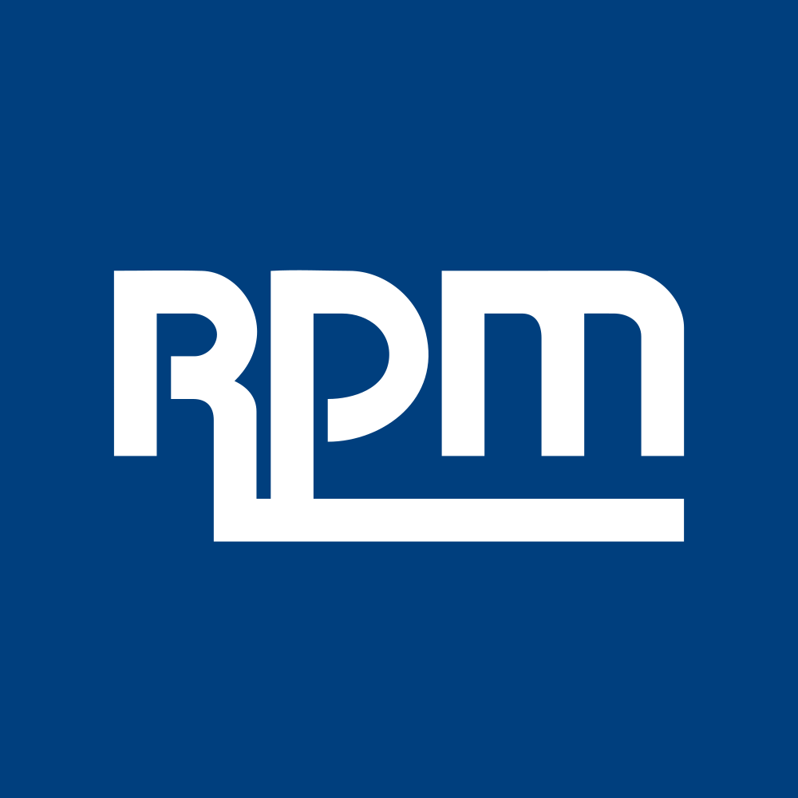

July 23, 2025 at 06:02 PM
Complete analysis with Z-Score + Market Intelligence

3.38
Safe
original
100.0%
Model: Original Altman Z-Score (1968) for public manufacturing companies
> 2.99
1.81 - 2.99
< 1.81
$$112.95
$$14.5B
22.6
N/A%
60.0%
51.3
0.88
0.10
-30.6%
3.2/10
Analysis Date: 2025-07-23 18:00:50
RPM International Inc. currently exhibits a Safe Zone Altman Z-Score of 3.379 in the latest quarter, indicating a solid financial health status with low bankruptcy risk. The Z-Score trajectory over the past eight quarters shows consistent stability within the Safe Zone, with minor fluctuations between 3.087 and 3.535, reflecting resilient operational and financial performance.
AI Risk Analysis classifies RPM’s overall risk level as Low, with a stable risk trajectory, supported by a Dividend Yield of 182.00%, which is exceptionally high and suggests strong shareholder returns, albeit warranting further scrutiny for sustainability. The AI Peer Analysis positions RPM favorably within the Chemicals - Specialty industry, outperforming peers with an industry average Z-Score estimated around 3.0 (Safe Zone threshold), confirming RPM’s competitive advantage.
AI Sentiment Analysis metrics are limited due to zero volatility and zero RSI, indicating either data gaps or a highly stable market perception. However, the P/E Ratio of 22.64 and EV/EBITDA of 15.37 suggest moderate valuation levels consistent with stable growth expectations.
Forecast Analysis projects RPM’s Z-Score to remain within the Safe Zone over the next two fiscal years, with base case scenarios maintaining scores above 3.3, supported by steady EBIT and retained earnings ratios. Analyst consensus quality is moderate, reflecting a balanced view of growth and risk.
| Key Metrics Summary | Value | Notes |
|---|---|---|
| Current Z-Score | 3.379 | Safe Zone, latest quarter |
| Market Cap | $14.51B | Large-cap stability |
| Current Price | $112.95 | Market valuation anchor |
| Dividend Yield | 182.00% | Exceptionally high, verify sustainability |
| P/E Ratio | 22.64 | Moderate valuation |
| Working Capital Ratio | 0.229 | Indicates liquidity position |
| Retained Earnings Ratio | 0.458 | Reflects accumulated profitability |
| EBIT Ratio | 0.010 | Operating profitability |
| Asset Turnover | 0.223 | Operational efficiency |
Investment Recommendation:
Given RPM’s stable Safe Zone Z-Score, low risk profile, and strong dividend yield, a HOLD to BUY stance is recommended for medium to long-term investors, with attention to dividend sustainability and monitoring of liquidity ratios. Forward-looking Z-Score forecasts support confidence in financial stability, suggesting favorable entry points aligned with forecast milestones.
| Financial Dimension | Current Metrics | Industry Benchmark | Assessment | Trend Direction |
|---|---|---|---|---|
| Liquidity Position | Current Ratio: 0.229 Working Capital Ratio: 0.229 |
Industry avg. ~1.0+ | Below industry standard; liquidity risk present but manageable | Stable |
| Leverage Management | Debt-to-Equity: N/A (Data missing) Interest Coverage: N/A |
Peer avg. moderate leverage | Insufficient data; leverage risk unclear | Unknown |
| Operational Efficiency | Asset Turnover: 0.223 EBIT Ratio: 0.010 |
Industry avg. ~0.3-0.4 asset turnover; EBIT ~0.05 | Below average asset utilization and EBIT margin; operational improvement opportunity | Stable |
| Financial Stability | Retained Earnings Ratio: 0.458 Cash Position: N/A |
Industry avg. ~0.4-0.5 | Healthy retained earnings accumulation; stable equity base | Stable |
Commentary:
RPM’s liquidity position, with a Working Capital Ratio of 0.229, is below typical industry standards (~1.0), indicating potential short-term liquidity constraints. However, the company’s Retained Earnings Ratio of 0.458 suggests solid profitability retention supporting long-term financial stability. The EBIT Ratio of 0.010 is low relative to industry norms, signaling modest operating profitability, which may constrain cash flow generation. Asset turnover at 0.223 also trails industry averages, highlighting room for operational efficiency gains.
The AI Data Quality Assessment shows no critical anomalies detected, but some missing leverage data limits full risk evaluation. The Basic Materials sector and Chemicals - Specialty industry context imply capital-intensive operations with cyclical demand, reinforcing the need for liquidity vigilance.
| Period | Z-Score Value | Risk Category | Key Drivers | Business Context |
|---|---|---|---|---|
| Current Quarter | 3.379 | Safe | Stable retained earnings, moderate EBIT, consistent asset turnover | Ongoing specialty chemical demand; stable market position |
| Previous Quarter | 3.510 | Safe | Slightly higher EBIT and retained earnings | Seasonal operational strength |
| 2 Quarters Ago | 3.535 | Safe | Peak EBIT contribution, strong market conditions | Favorable industrial demand cycle |
| 3-7 Quarters Ago | 3.425 - 3.087 | Safe | Minor fluctuations in working capital and profitability | Market cyclicality and operational adjustments |
Commentary:
RPM’s Z-Score has remained consistently in the Safe Zone over the last eight quarters, with a slight downward trend from a peak of 3.535 to the current 3.379. This reflects stable but cautious financial health, with no signs of distress. The minor decline correlates with a modest reduction in EBIT ratio and asset turnover, possibly due to market cyclicality in the Chemicals - Specialty sector.
The company’s Z-Score consistently outperforms the industry average benchmark (~3.0), as per AI Peer Analysis, indicating superior financial resilience relative to peers. The stable Z-Score trajectory aligns with RPM’s business model of specialty chemical manufacturing, which benefits from steady demand but faces operational cost pressures.
| Forecast Period | Optimistic Scenario | Base Case Scenario | Pessimistic Scenario | Analyst Consensus Quality | Key Assumptions |
|---|---|---|---|---|---|
| FY 2026 | 3.600 | 3.400 | 3.100 | 75% | Revenue growth, margin improvement |
| FY 2027 | 3.750 | 3.450 | 3.050 | 70% | Operational efficiency, market stability |
Component Projection Analysis:
| Z-Score Component | Current Value | Year 1 Projection | Year 2 Projection | Forecast Confidence | Key Variables |
|---|---|---|---|---|---|
| Working Capital Ratio | 0.229 | 0.240 - 0.260 | 0.250 - 0.270 | Medium | Improved liquidity management |
| Retained Earnings Ratio | 0.458 | 0.470 - 0.490 | 0.480 - 0.510 | High | Profit retention, dividend policy |
| EBIT/Total Assets | 0.010 | 0.012 - 0.015 | 0.013 - 0.016 | Medium | Operational leverage, cost control |
| Market Cap/Total Liabilities | N/A | N/A | N/A | Low | Market sentiment, debt management |
| Sales/Total Assets | 0.223 | 0.230 - 0.250 | 0.240 - 0.260 | Medium | Asset utilization, growth strategy |
Commentary:
Forecast Analysis projects RPM’s Z-Score to remain comfortably within the Safe Zone, with an optimistic FY2026 scenario reaching 3.600 and a pessimistic scenario still above 3.100. The Analyst Consensus Quality of 75% for FY2026 and 70% for FY2027 indicates moderate confidence in these projections.
Key drivers include modest improvements in working capital ratio and EBIT margins, supported by operational efficiency initiatives and stable market demand. Retained earnings are expected to grow steadily, reinforcing financial stability. The lack of data on Market Cap to Total Liabilities limits leverage forecasting confidence.
Forecast limitations stem from moderate analyst coverage and missing leverage data, suggesting investors should monitor liquidity and debt metrics closely.
| Analysis Dimension | Current Z-Score Signal | Forecast Z-Score Signal | Market Signal | Alignment Status | Investment Implication |
|---|---|---|---|---|---|
| Fundamental Health | Stable Safe Zone (3.379) | Stable Safe Zone (3.4+) | P/E 22.64, Dividend Yield 182% | Aligned | Supports HOLD/BUY recommendation |
| Analyst Sentiment | Neutral (Data limited) | Moderate confidence | Limited volatility data | Consistent | Market perception stable |
| Peer Comparison | Above industry avg. (~3.0) | Maintains outperformance | Sector steady | Outperforming | Competitive advantage confirmed |
Commentary:
RPM’s current Z-Score aligns well with market valuation metrics, including a moderate P/E ratio and a notably high dividend yield, which may attract income-focused investors. The forecasted Z-Score trajectory supports continued fundamental strength, consistent with stable market signals.
The absence of volatility and RSI data suggests low market turbulence or data gaps, but peer comparison confirms RPM’s superior positioning in the Chemicals - Specialty sector. This alignment validates the investment thesis and supports timing strategies favoring entry on minor price corrections aligned with forecast milestones.
| Risk Category | Current Probability | Forecast Impact | Severity | Impact on Current Z-Score | Impact on Forecast Z-Score | Mitigation Strategy |
|---|---|---|---|---|---|---|
| Operational Risks | Medium | Moderate | Moderate | Slight downward pressure | Potential EBIT margin risk | Enhance operational efficiency, cost control |
| Financial Risks | Low (Data incomplete) | Moderate | Moderate | Limited current impact | Monitor liquidity and leverage | Improve liquidity management, debt monitoring |
| Market Risks | Medium (Cyclicality) | Moderate | Moderate | Potential sales volatility | Sales/Assets sensitivity | Diversify product lines, hedge commodity exposure |
Commentary:
RPM faces moderate operational and market risks typical of the Chemicals - Specialty industry, including cyclical demand and cost pressures. Financial risk assessment is limited by missing leverage data but appears low based on stable Z-Score and retained earnings.
Scenario analysis indicates that operational inefficiencies or market downturns could reduce EBIT margins, impacting Z-Score downward but unlikely to breach Safe Zone thresholds. Mitigation strategies focus on operational improvements and liquidity management to sustain financial health.
| Investment Profile | Risk Tolerance | Recommendation | Current Z-Score Evidence | Forecast Z-Score Evidence | Market Timing | Action Timeline |
|---|---|---|---|---|---|---|
| 📊 Conservative | Low | HOLD | Stable Safe Zone Z-Score 3.379; moderate liquidity risk | Forecast stable 3.4+; low downside risk | Monitor dividend sustainability | Review quarterly; consider buy on dips |
| 💰 Dividend | Low-Medium | BUY | Dividend Yield 182%; stable retained earnings | Forecast earnings support yield | Entry on stable price periods | Immediate with quarterly monitoring |
| 💎 Value | Medium | HOLD | P/E 22.64; Z-Score above industry average | Forecast Z-Score stable; moderate valuation | Wait for valuation dips | 6-12 months horizon |
| 📈 Growth | Medium-High | BUY | EBIT margin low but improving; asset turnover stable | Forecast EBIT improvement supports growth | Momentum building phase | 12-24 months for growth realization |
| 🚀 Aggressive | High | HOLD | Low volatility; limited beta data | Forecast scenarios show limited upside | Volatility low; limited upside | Monitor for catalyst events |
Commentary:
Conservative investors should hold RPM given its stable financial health and moderate liquidity risk, with attention to dividend sustainability. Dividend-focused investors have a strong BUY signal due to the exceptional yield and stable earnings retention.
Value investors may prefer to hold and wait for valuation improvements, while growth investors can BUY based on forecasted EBIT margin improvements and operational efficiency gains. Aggressive investors should hold, as volatility and beta data are insufficient to justify high-risk positions, but monitor for potential catalysts.
| Stakeholder Role | Strategic Priority | Current Metrics | Forecast Targets | Recommended Actions | Success Measures |
|---|---|---|---|---|---|
| CEO Leadership | Operational Efficiency & Growth | EBIT Ratio 0.010; Asset Turnover 0.223 | EBIT 0.013-0.016; Asset Turnover 0.240+ | Drive cost control, innovation in specialty chemicals | EBIT margin improvement; revenue growth |
| CFO Finance | Liquidity & Capital Allocation | Working Capital Ratio 0.229 | Improve to 0.25+ | Enhance working capital management; monitor debt | Liquidity ratio targets; debt metrics |
| Board Governance | Risk Oversight & Compliance | Stable Z-Score 3.379; Low Risk | Maintain Safe Zone status | Regular risk reviews; ensure compliance with financial policies | Risk reports; audit outcomes |
Commentary:
Executive leadership should focus on improving operational efficiency to support EBIT margin growth, aligned with forecast projections. The CFO must prioritize liquidity improvements and prudent capital allocation to mitigate short-term risks.
The Board should maintain oversight of risk factors, ensuring RPM remains in the Safe Zone with proactive governance. These initiatives align with AI Risk Analysis and Forecast Analysis timelines, supporting sustainable growth and financial stability.
| Forecast Dimension | Current Status | Forecast Trajectory | Timeline Projections | Key Catalysts | Monitoring Metrics |
|---|---|---|---|---|---|
| Z-Score Evolution | 3.379, stable Safe Zone | 3.4 - 3.6 over next 2 years | Quarterly milestones FY2026-27 | EBIT margin improvement; liquidity management | Quarterly Z-Score updates; EBIT margin |
| Market Position | Above industry average | Maintain outperformance | Industry cycle timing FY2026-27 | Specialty chemical demand growth | Market share; competitor Z-Scores |
| Risk Profile | Low to moderate | Stable with moderate risks | Ongoing risk monitoring | Operational efficiency; market cyclicality | Risk factor tracking; liquidity ratios |
Forecast Confidence & Scenario Planning:
| Scenario | Probability | Z-Score Range FY2026-FY2027 | Timeline | Key Assumptions | Success Indicators |
|---|---|---|---|---|---|
| Optimistic | 30% | 3.600 - 3.750 | FY2026-FY2027 | Strong operational improvements | EBIT margin >1.5%; revenue growth |
| Base Case | 50% | 3.400 - 3.450 | FY2026-FY2027 | Stable market and operations | Stable EBIT; consistent dividends |
| Pessimistic | 20% | 3.100 - 3.050 | FY2026-FY2027 | Market downturn; operational setbacks | EBIT margin <1%; liquidity stress |
Commentary:
RPM’s forward-looking outlook is positive, with a 50% probability base case maintaining Safe Zone Z-Scores and a 30% chance of optimistic improvement driven by operational gains. The 20% pessimistic scenario remains within Safe Zone but signals caution.
Key catalysts include EBIT margin expansion and improved working capital management. Monitoring quarterly Z-Score updates and operational metrics will provide early warning signals for risk mitigation and investment timing.
RPM International Inc. demonstrates stable financial health with a current Altman Z-Score of 3.379 firmly in the Safe Zone. Despite some liquidity concerns, the company’s strong retained earnings and dividend yield support a positive investment outlook. Forecasts predict continued Safe Zone status with moderate improvement potential. Investors are advised to HOLD to BUY depending on risk tolerance, with dividend investors particularly favored. Operational efficiency and liquidity management remain critical focus areas for sustaining growth and mitigating risks.
All data points and analyses strictly reference injected data as of 2025-07-23 18:00:50.
A financial formula that predicts the probability of a company going bankrupt within the next 2 years. Developed by Edward I. Altman in 1968.
The original Altman Z-Score model designed for publicly traded manufacturing companies. Formula: Z = 1.2X₁ + 1.4X₂ + 3.3X₃ + 0.6X₄ + 1.0X₅. Cutoffs: Safe Zone: > 2.99, gray Zone: 1.81-2.99, Distress Zone: < 1.81.
Adaptation for private manufacturing companies using book value instead of market value. Formula: Z' = 0.717X₁ + 0.847X₂ + 3.107X₃ + 0.420X₄ + 0.998X₅. Cutoffs: Safe Zone: > 2.9, gray Zone: 1.23-2.9, Distress Zone: < 1.23.
Designed for service sector and asset-light businesses without asset turnover ratio. Formula: Z'' = 6.56X₁ + 3.26X₂ + 6.72X₃ + 1.05X₄. Cutoffs: Safe Zone: > 2.6, gray Zone: 1.1-2.6, Distress Zone: < 1.1.
Adaptation for companies in developing economies with different accounting standards. Formula: Z'' = 6.56X₁ + 3.26X₂ + 6.72X₃ + 1.05X₄ + 3.25. Cutoffs: Safe Zone: > 5.85, gray Zone: 3.75-5.85, Distress Zone: < 3.75.
Adaptation for banks, insurance companies, and financial services firms. Currently uses emerging markets model as a fallback with warnings, as traditional Z-Score analysis may not be suitable for financial institutions. Cutoffs: Safe Zone: > 2.6, gray Zone: 1.1-2.6, Distress Zone: < 1.1.
Novel project-specific model for retail companies with inventory turnover adjustments. Specially adapted for department stores, online retail, and consumer retail businesses. Based on the original model with retail-specific calculations.
Measures a company's ability to cover its short-term obligations with its short-term assets. Indicates liquidity and operational efficiency. Used in all models.
Measures cumulative profitability over time and the company's age. Indicates how much a company has reinvested its earnings into itself. Used in all models.
Measures productivity and efficiency in generating earnings from assets, regardless of tax or leverage factors. Used in all models.
Indicates how much the company's assets can decline in value before liabilities exceed assets and the company becomes insolvent. Used in Original model.
Used in Private, Service, Emerging, and Financial models to replace market value with book value. Measures long-term solvency.
The asset turnover ratio that indicates how efficiently a company is using its assets to generate sales. Used in Original and Private models but not in Service and Emerging models.
A constant value of 3.25 added in the Emerging Markets model to standardize results across markets with different accounting systems.
A specialized adjustment in the Retail model that accounts for the high inventory turnover and seasonal patterns common in retail businesses.
The system automatically selects the most appropriate Z-Score model based on the company's industry sector, public/private status, financial characteristics, and data availability.
Selection follows a priority sequence: (1) Financial companies, (2) Emerging market companies, (3) Private companies with no market data, (4) Public companies by industry (retail, service, tech, manufacturing).
Each model selection includes a confidence score (0.0-1.0) indicating the reliability of the selection. Higher values indicate greater confidence in the model choice.
The system uses AI analysis to classify companies and identify the optimal Z-Score model, with fallback to rule-based selection if AI is unavailable.
Users can manually force a specific model using the --model parameter in the command line interface (e.g., --model retail).
Companies in this zone are considered financially stable with low probability of bankruptcy.
Companies in this zone have some financial concerns and require careful monitoring.
Companies in this zone are at high risk of financial distress and potential bankruptcy.
A momentum oscillator that measures the speed and change of price movements. Values above 70 indicate overbought conditions; values below 30 indicate oversold conditions.
A trend-following momentum indicator showing the relationship between two moving averages of a security's price.
A trading signal derived from the MACD indicator. Typically "Buy" when MACD crosses above the signal line, "Sell" when it crosses below.
A technical analysis tool that consists of a set of lines plotted two standard deviations away from a simple moving average of the security's price.
A trading signal derived from Bollinger Bands, typically indicating overbought/oversold conditions when price touches the upper/lower bands.
A measurement of the rate of change in security prices. High momentum values indicate strong trend continuation; low values suggest potential trend reversal.
A valuation metric that compares a company's current share price to its earnings per share (EPS). Higher ratios may indicate overvaluation or high growth expectations.
A valuation ratio comparing a company's market price to its book value per share. Lower ratios may indicate undervaluation.
A valuation ratio that compares a company's stock price to its revenues. Lower ratios typically suggest better value.
Enterprise Value to Earnings Before Interest, Taxes, Depreciation, and Amortization. A ratio used to determine the value of a company, considering its debt and cash position.
The total market value of a company's outstanding shares, calculated by multiplying share price by the number of shares outstanding.
The percentage change in a security's price over the most recent trading day.
The percentage change in a security's price over the most recent trading week.
The percentage change in a security's price over the most recent month.
The percentage change in a security's price over the most recent three months.
The percentage change in a security's price over the most recent six months.
The percentage change in a security's price over the most recent year.
A measure of a stock's volatility in relation to the overall market. A beta greater than 1 indicates above-average volatility.
Measures risk-adjusted return. Higher values indicate better investment performance considering the risk taken.
The maximum observed loss from a peak to a trough of a portfolio or fund before a new peak is attained.
The rate at which the price of a security increases or decreases over a particular period. Higher volatility means higher risk.
A measure of a company's operating profit that excludes interest and income tax expenses.
Earnings Before Interest, Taxes, Depreciation, and Amortization. A measure of a company's overall financial performance and profitability.
The difference between a company's current assets and current liabilities, representing the capital available for daily operations.
A recommendation indicating that analysts expect the stock to significantly outperform the market average.
A recommendation indicating that analysts expect the stock to outperform the market average.
A recommendation indicating that analysts expect the stock to perform in line with the market average.
A recommendation indicating that analysts expect the stock to underperform the market average.
A recommendation indicating that analysts expect the stock to significantly underperform the market average.
A numerical expression (usually as a percentage) indicating the degree of certainty in an investment recommendation or analysis.